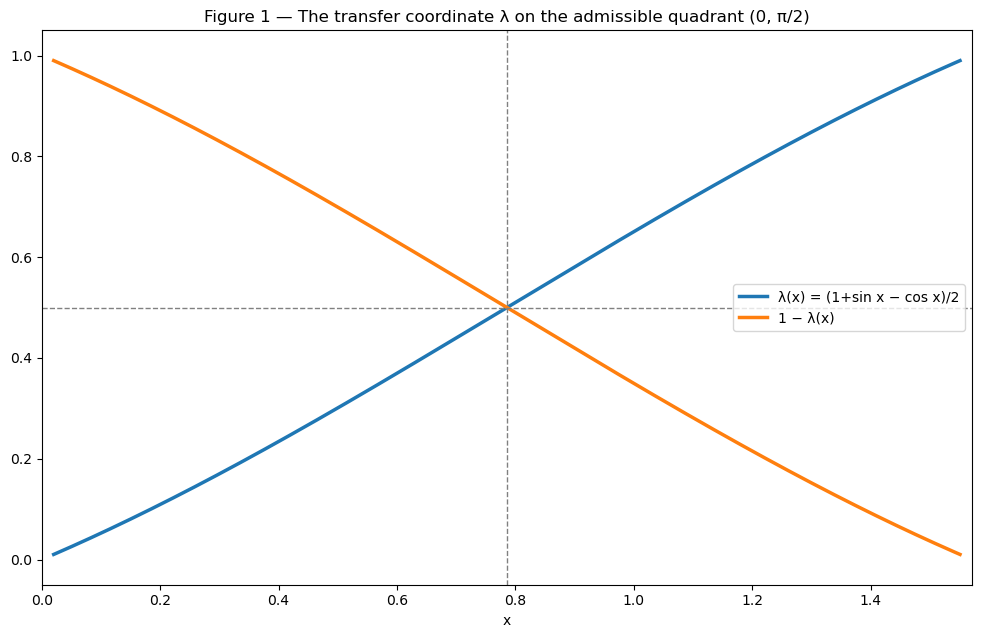
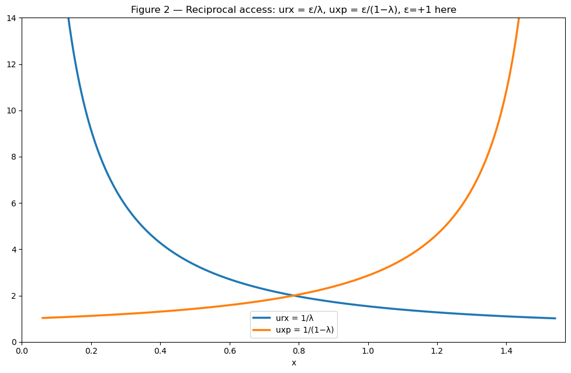
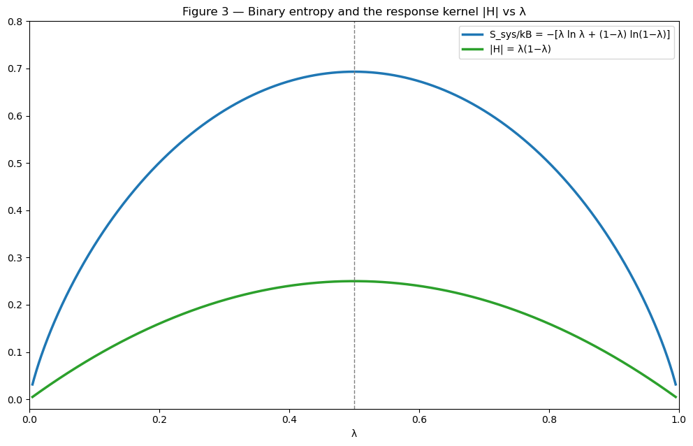
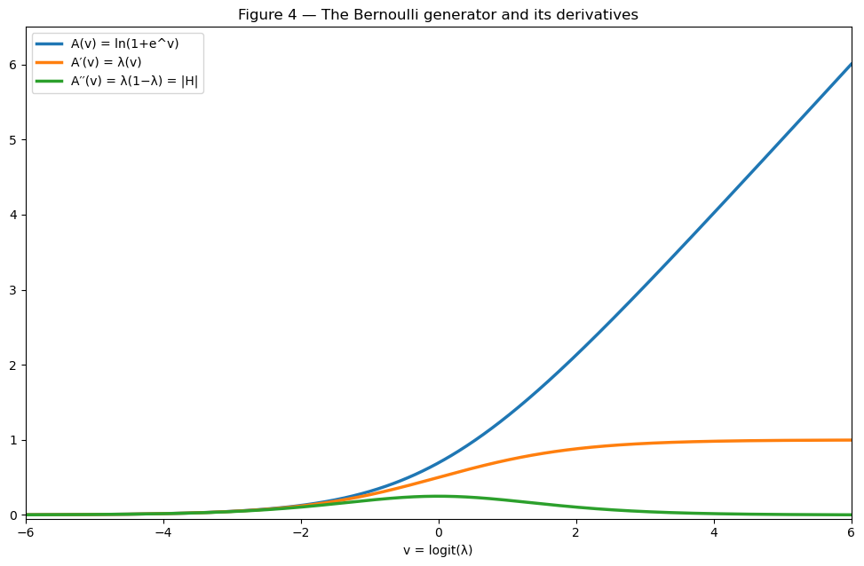
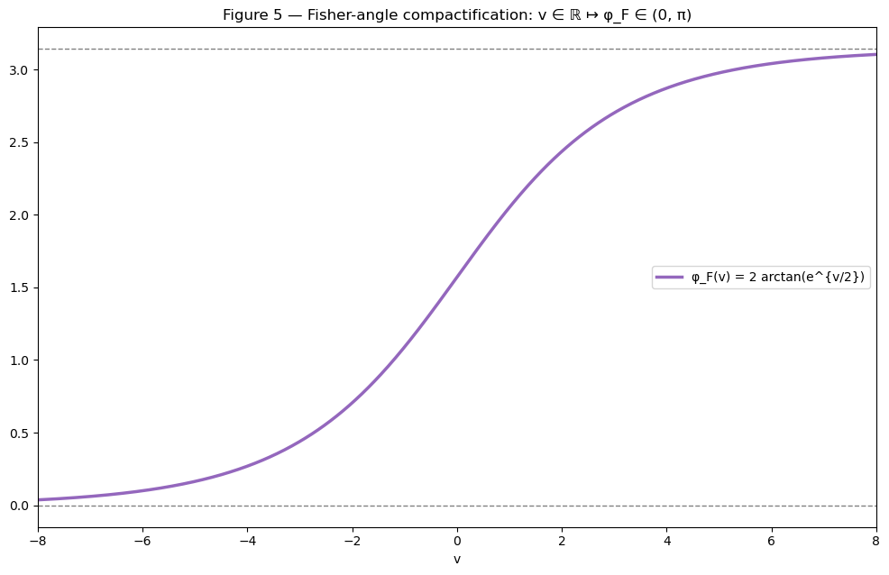
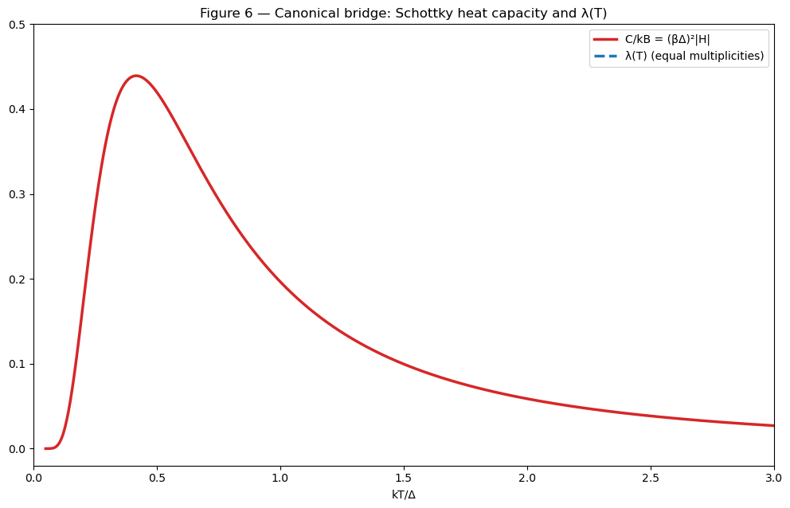
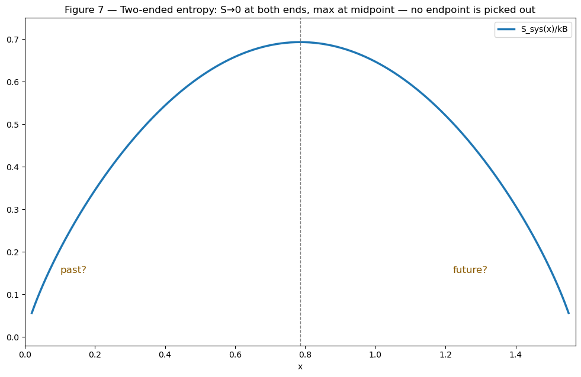

A restructured rewrite of Book 13 of R Theory — Volume II, plus the Volume II closure. Pictures and intuition first; the formal audit second. Every claim carries exactly one status: CP checked proof, SC completed symbolic check, NC completed numerical check, ST standard imported theorem, MA not independently verified manuscript assertion, AX assumption or axiom, IN incomplete or failed computation, IC incorrect result. A sampled numerical agreement (~1e-10) is a completed numerical check, never a proof.
Contents. I. See it first · II. Then earn it · III. What is established, what is conditional, what is not · IV. Close the book · V. Volume II closure
Source: volume2_full.txt lines 5229–5783 (Book 13, 555 lines / 4088 words) and lines 5784–5832 (Volume II closure, 49 lines / 410 words). Governing rule of the book: reparameterization is not derivation — a mathematical identity becomes physically meaningful only after the relevant physical contract is stated.
Seven pictures. Each one is an exact identity or theorem of Book 13 drawn before it is proved. The graphs below are live Desmos calculators (drag to pan, scroll to zoom); if Desmos cannot load, a static rendering appears instead, generated from the same formulas.







Section by section. Each claim carries one status tag. Checks below were run in validation/book13/verify_book13.py: 86 checks, all passed (26 CP, 57 NC, 1 IC and 2 IN findings documented). Worst err/tol ratio 0.55; tightest identity checks measure ≤ 4.9e-10 absolute (global reciprocal-access pair, 4×10⁴ points); near-seam identity checks ≤ 4e-9 absolute on values up to ~1e3; no timeouts.
On admissible charts (ε=+1) the reciprocal-access relations urx = ε/λ, uxp = ε/(1−λ) hold with canonical λ, verified against the certified Book 2 sum/product identities (which-is-which pinned: urx = 1/λ, not the swap). NC The identity λ(1−λ) = sin(2x)/4 = H holds signed, exactly. CP The positive square-root state Ψstat = (√λ, √(1−λ)) is the canonical square-root embedding of a Bernoulli distribution after the statistical contract — it adds no quantum phase or coherence. MA not independently verified (status declaration, correctly labeled as contract-dependent).
Textual defect (source). The sentence "with 00 as h->0 and Ssys=kB ln 2 at h=1/4" is garbled as printed: the variable h is undefined (canonical notation uses H) and "00" is not a constraint. Recovered intent — Ssys → 0 as |H| → 0, Ssys = kB ln 2 at |H| = 1/4 — is true. NC (for the recovered mathematics; the printed sentence itself is defective).
Dependency note. "The book begins from the already-certified reciprocal state": the reciprocal identities (urx+uxp, urx·uxp, FlatWave) are ledger-PROVED (Book 2 spine). But the Volume I audit found the "certified transfer coordinate λ" label defective in 2.XI.L9 (λ is constructible as ε/urx, but "certified" was never earned). Book 13 uses λ as a defined coordinate (saw_r) on admissible charts, which is legitimate; any reading that leans on λ's upstream certification inherits that defect. MA not independently verified
Every step of the proof was verified: A′(v) = λ, A′′(v) = λ(1−λ) = |H| (on admissible charts), ln|uxp| = A(v), ln|urx| = A(−v), λv − A(v) = λ ln λ + (1−λ)ln(1−λ) = −Ssys/kB, KL = Bregman divergence of A, Fisher metric = A′′, and φF(v) = 2 arctan(ev/2) with dφF/dv = √A′′, range (0, π). NC The framing — that these are all one Bernoulli exponential family — is standard exponential-family mathematics. ST Theorem as stated (conditional on the Bernoulli contract): CP
The Gibbs contract is an explicit physics import: two levels with energies, multiplicities, gap Δ, canonical bath. Verified: v = Δ/(kBT) + ln(gr/gx), T = Δ/{kB[v − ln(gr/gx)]}, λ∞ = gr/(gr+gx) (= 1/2 iff gr=gx), microstate entropy Smicro = Ssys + kB[λ ln gr + (1−λ) ln gx] maximal at λ∞ with value kB ln(gr+gx), Z = gr|urx| and Feq = −kBT ln(gr|urx|) in the Er=0 gauge, Var(E) = Δ²|H|, C = kB(βΔ)²|H|, dλ/dv = |H| = Iv, and the 21-cm spin-temperature re-expression Ts = T*/(v + ln 3). NC The Boltzmann/Gibbs relations themselves are standard. ST
Conditional Theorem 13.III.T1 (temperature identifiability obstruction): one scalar equation βΔ = v − ln(gr/gx) in two unknowns fixes only the product; absolute temperature needs an independent gap or calibration. Complete elementary argument. CP
Conditional Theorem 13.III.T2 (response kernel): |H| is the common dimensionless kernel of probability susceptibility, energy variance, entropy response, Fisher information, and heat capacity — the dimensional meaning enters only through the imported scale, temperature, and ensemble. Proof steps verified. CP
Imprecision (source). "For equal multiplicity, |urx| is therefore exactly the canonical partition function in this energy gauge." The book's own derivation gives Z = gr|urx|, hence |urx| = Z/gr. With equal multiplicities gr=gx=2, |urx| = Z/2 ≠ Z (verified). "Exactly the partition function" requires the nondegenerate lower level gr=1, not merely equal multiplicities. As stated: IC
The two-state continuous-time Markov contract (rates k±) is an explicit import. Verified: σ̇ = kB(J+−J−) ln(J+/J−) ≥ 0, detailed balance at Λ = k+/(k++k−), v=a, ln(J+/J−) = a − v, ∂D/∂λ = v − a, σ̇ = −kB dD/dt, Fnoneq − Feq = kBT·D(λ‖Λ), dFnoneq/dt = −Tσ̇, and the chain-rule identity |H|·v̇² = φ̇F². NC These are standard stochastic-thermodynamics identities. ST
Conditional Theorem 13.IV.T1 (KL/free-energy relaxation): relative entropy to equilibrium is the dimensionless nonequilibrium free-energy excess and decays monotonically exactly when entropy production is nonnegative. Proof verified end to end. CP
Slow-driving Fisher form σ̇ ≈ (kB/γ)|H|·v̇², constant-Fisher-speed minimality, and reversal-invariance of the metric cost are standard linear-response/thermodynamic-geometry results, stated as approximations and correctly labeled as measuring dissipation cost without choosing a temporal direction. ST
Incomplete statement (source). "for protocol duration τ, Sigma_prod >= ^2." — the right-hand side's numerator is missing as printed (the intended Cauchy–Schwarz bound, e.g. kB(ΔφF)²/(γτ), is not stated). Cannot be verified as printed. IN
Exact-potential affinities telescope to zero around closed cycles: elementary. CP The four-state ring (clockwise p, counterclockwise q) was verified: uniform stationary distribution, visible coarse-grained chain exactly detailed-balanced at λ=1/2 with equal both-way rates, nonzero hidden current and positive hidden entropy production for p≠q. NC Conditional Theorem 13.V.T1 (visible equilibrium need not be microscopic equilibrium): correct for the declared model. CP
Negative Result 13.V.N1 (seam-affinity obstruction): the telescoping half is proved; the second half — that seam data "does not determine a unique crossing rule or stochastic transition law" — is argued by the source boundary theorem, which appears nowhere else in Volume II (single occurrence, inside Book 13 itself) and is not in the Volume I audit ledger as earned. The proof as given leans on an uncertified premise. MA not independently verified (with dependency flag; the telescoping lemma alone is CP).
Verified: the lifted quarter-turn has exact order four; its action on the primitive quartet is the pair of 2-cycles (srx crx)(sxp cxp); ε, H, urx, uxp, FlatWave reverse after one cophase step and restore after two; all are π-periodic, hence cannot distinguish x from x+π; and λ(π/2−x) = 1−λ(x). NC No faithful affine C4 action on one real coordinate exists (a=±1 exhaustion, verified symbolically); R² rotations give a faithful one. CP
Incorrect as stated (source). "The transfer coordinate lambda is quarter-turn invariant." Under the volume's canonical notation λ = (1+sin x−cos x)/2 this is false: λ(0) = 0 but λ(π/2) = 1 (verified). What is quarter-turn invariant is the constructible ratio λb = ε/urx (verified), which agrees with canonical λ on admissible charts but differs off-chart (at 3π/4: 0.5 vs (1+√2)/2 ≈ 1.207, verified). The book never distinguishes the two λ's. Not load-bearing for Theorem 13.VI.T1. IC
Theorem 13.VI.T1 (cophase kinetic nonselection): the proof is a conceptual symmetry argument — a canonically selected real cycle bias must be both reflection-invariant and sign-reversing, hence zero. The "canonical selection" premise does the work; this is not a formal derivation. The conclusion (no certified result selects unequal cophase rates) is correctly scoped as a nonselection result, and the book explicitly refuses to conflate orientation signs with temporal direction ("Orientation signs can record which orientation has been chosen. They do not choose it."). MA not independently verified
The rank claims — a single continuous branch-bias coordinate captures only the C2 parity quotient; a faithful stochastic cophase refinement needs at least two branch-bias directions (rank ≥ 3 with λ); the correction of the earlier factorized (λ,η) ansatz — use modeling language ("locally complete convex probability family") not given a precise definition in the book. MA not independently verified
Verified: Ssys(λ) = Ssys(1−λ); on the principal quadrant the entropy is zero at both ends and maximal (ln 2) at the midpoint, exactly symmetric about π/4. Conditional Theorem 13.VII.T1 (two-ended entropy): the Bernoulli entropy cannot select one quadrant endpoint as the unique past. Complete elementary proof. CP
The path-space material — entropy production as a trajectory log-probability ratio, its mean a KL divergence, hence nonnegative; reversible microdynamics with low-entropy preparation giving macroscopic increase; a mid-time low-entropy condition giving two-sided increase; the arrow requiring asymmetric boundary/preparation data — is standard imported statistical-mechanical reasoning, correctly stated and correctly separated from Projection's internal mathematics. ST The retirement of a universal Time=ΔEntropy identity is a status declaration following from 13.VII.T1, correctly scoped ("at most" a process-dependent progress coordinate). MA not independently verified
Theorem 13.VIII.T1 (state-rank obstruction): every certified scalar readout is a function of one real parameter; a smooth one-parameter family has differential rank at most one (verified symbolically); independent thermodynamic directions need rank ≥ 2, so temperature, pressure, chemical potential, or a generic equation of state require added coordinates or an explicitly one-dimensional process contract. Complete elementary argument. CP The Jacobian criterion JUV ≠ 0, the two-outcomes/one-coordinate and three-outcomes/full-rank simplex counts are elementary. CP
SN = N·Ssys, CN = N·C for independent copies: standard. ST Negative Result 13.VIII.N1: if F is V-independent then P = −(∂F/∂V)T = 0; a geometric carrier variable becomes thermodynamic volume only after a subsystem boundary and V-dependent spectrum/interaction/counting are supplied. Two-line complete proof. CP
Verified: Ssys′′(λ) = −kB/[λ(1−λ)] = −kB/|H|, equal to −4kB (finite) at λ=1/2 — the midpoint is a smooth maximum, not a critical singularity; λ:(0,π/2) → (0,1) is a strictly monotone bijection; any interior λ0 maps to zero of a monotone control coordinate τ = a[logit(λ) − logit(λ0)]. CP Negative Result 13.IX.N1 (BEC promotion no-go): coordinate matching alone cannot identify any Projection midpoint/seam/FlatWave reversal/entropy extremum with Bose–Einstein condensation; the many-body and thermodynamic contracts must be supplied, and any Projection-specific claim must predict a restriction beyond the imported model. Proof complete given the checked lemmas. CP The complex condensate phase is correctly classified as a genuine extension under 13.VIII.T1. CP
Theorem 13.X.T1 (candidate-bounded autonomous-arrow no-go): honestly scoped as an exhaustiveness result over the candidate mechanisms admitted in this book, explicitly "not a universal impossibility theorem". The cited reasons (time-neutral state functions, telescoping affinities, no visible circulation, unselected cophase rates, zero detailed-balance production, even Fisher/free-energy geometry) are established; but "the preceding sections exhaust the admitted candidate mechanisms" is asserted, not proved — exhaustiveness over a candidate list cannot be derived from the list. MA not independently verified
Terminal Theorem 13.X.T2 (Book 13 closure): three-level closure bookkeeping (statistical closure / conditional thermodynamic closure / arrow obstruction). Proof is a section-pointer summary; no circular dependence is introduced, and no unresolved premise is promoted. MA not independently verified
Arrow-of-time discipline verdict. The book keeps three things distinct throughout: (a) exact mathematical asymmetries — the two-ended entropy CP, cophase sign-flip laws NC; (b) thermodynamic imports — the Bernoulli, Gibbs, Markov, path/reversal, and many-body contracts, each explicitly declared ST/ AX; (c) philosophical interpretation — retirement of Time=ΔEntropy, "a thermometer is not a clock" MA not independently verified. The nonnegativity (J+−J−)ln(J+/J−) ≥ 0 is mathematics inside the Markov contract, not an imported second law; the import is the contract itself. FlatWave's orientation sign is never conflated with temporal direction — the book explicitly forbids it. No imported second law is presented as a derived result.
The book's own closing ledger (§13.X), with audit tags attached:
Any future nonzero thermodynamic arrow must enter through an explicit history-sensitive extension: asymmetric rates or cycle affinity, multiple reservoirs, nonconservative forcing, external driving, asymmetric preparation/boundary data, hidden memory or environmental correlations, or a separately imported microscopic time-asymmetric law with its path/reversal contract. MA not independently verified (extension ledger)
Book 13 closes on a narrower but stronger statement than the original Time=ΔEntropy hypothesis: Projection Craft derives a natural statistical geometry; with declared physical contracts that geometry serves as a precise coordinate system for standard equilibrium and stochastic thermodynamics; but the thermodynamic arrow is not a scalar property of the Projection state — it begins only when histories become physically inequivalent.
Books 7–13 block closure. Books 7–13 carry one certified mathematical carrier through classical dynamics, fields, relativity, quantum representation, particle architecture, harmonic calibration, and thermodynamics. At every stage physical equations enter only under explicit import; later representation successes do not retroactively justify earlier axioms. Through Book 13 the operational-difference set remains empty. Subsequent work may inherit only the certified mathematical identities and explicitly labeled conditional physics established here. MA not independently verified (status declaration; the "certified" wording carries the §13.I dependency note above)
The Book 13 entry is audited in Parts I–IV above. The Books 7–12 entries summarize books outside this worker's span and are MA from this audit's position — not independently verified here.
No book in Volume II has established a nonempty Projection-specific operational difference set relative to its named reference theory. Therefore Δop(Volume II) = ∅. The null hypothesis — Projection Craft may change representation without changing operational physics — survives the closure of Volume II. MA not independently verified (from this worker's position: Book 13 contributes no counterexample; Books 7–12 were not audited here)
Volume II depends only on Volume I, ordinary background mathematics, and explicitly declared external imports. No access to the former consolidated master manuscript is required for the logical reading of Books 7–13. Future extensions may cite these two volumes, but they must not silently alter their theorem status, numbering, or dependency order. MA not independently verified — with two Book 13 dependency flags recorded above: the inherited "certified λ" labeling defect (Volume I ledger, 2.XI.L9) and the uncertified "source boundary theorem" invoked in 13.V.N1.
The former consolidated master manuscript may be retired to archive status only after (a) Volume I receives the same publication audit and (b) a final cross-volume comparison confirms that no unique authoritative theorem, obstruction, caveat, dependency, or status qualification remains only in the master. This is a conditional permission, not an authorization: the antecedent is not satisfied — the Volume I audit ledger still lists open/incomplete items (Book 1–3 sections read but not independently machine-checked; Wolfram Engine unlicensed). The corrected-Casimir rerun and exhaustive Casimir diagnostics have since completed (corrected-operator spectrum {0:1, 48:1820, 64:6435}; odd-subspace invariance 0.0; so(16) commutator violation 0.0; see ledger §1, §8), but that does not satisfy the antecedent. MA not independently verified (procedural condition; antecedent currently unmet)